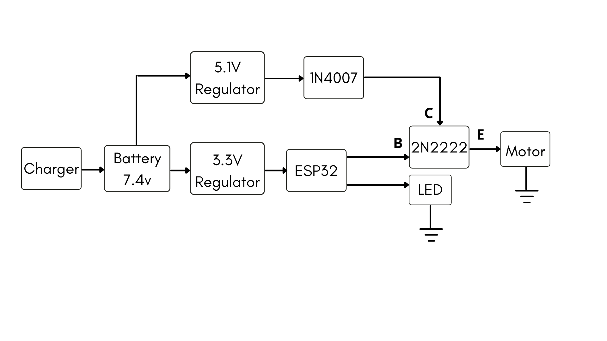
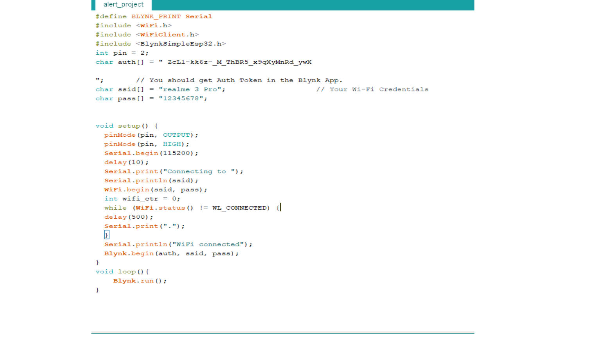

WEEK 1
April 10 2021
ESP 32
ESP32 is a series of low-cost, low-power system on a chip microcontrollers with integrated Wi-Fi and dual-mode Bluetooth. The ESP32 series employs a Tensilica Xtensa LX6 microprocessor in both dual-core and single-core variations and includes built-in antenna switches, RF balun, power amplifier, low-noise receive amplifier, filters, and power-management modules. ESP32 is created and developed by Espressif Systems, a Shanghai-based Chinese company, and is manufactured by TSMC using their 40 nm process. It is a successor to the ESP8266 microcontroller.
1. Circuit Diagram
The first task was to draw the circuit according to the specifications. The motor is programmed using ESP32. ESP32 is powered by regulated voltage of 3.3V. The transistor used in 2N2222 . The first draft of the circuit had some mistakes. Afterwards the circuit was modified by Amith sir. The final version of ciruit diagram is as shown below.
2. Circuit Design on PCB
The next task was to assemble the circuit on PCB according to the circuit diagram . A battery of 7.4 Voltage ws connected to regulator to obtain 3.3 V and 5.1 V. The 5.1 V to diode IN007 ans 3.3 V to the ESP32 .The motor was programmed by ESP 32 and using transistor. The different cricuits were done for an experimentation/study purpose.The esp32 controlllig process was initially tried with an on/off sign ,then with an LED and then with motor control and Blynk app interface
#define BLYNK_PRINT Serial
#include
#include
#include
int pin = 2;
char auth[] = "pGw0NoqVl6aWtT56tG1LPZdYDMQUAHPS"; // You should get Auth Token in the Blynk App.
char ssid[] = "realme 3 Pro"; // Your Wi-Fi Credentials
char pass[] = "12345678";
void setup() {
pinMode(pin, OUTPUT);
pinMode(pin, HIGH);
Serial.begin(115200);
delay(10);
Serial.print("Connecting to ");
Serial.println(ssid);
WiFi.begin(ssid, pass);
int wifi_ctr = 0;
while (WiFi.status() != WL_CONNECTED) {
delay(500);
Serial.print(".");
}
Serial.println("WiFi connected");
Blynk.begin(auth, ssid, pass);
}
void loop(){
Blynk.run();
}
4. Testing with Blynk application
The setup was tested using an interface created on Blynk. The application activates the alert device at a preset time for a preset duration .Using the arduino IDE the code to enable control over the circuit using ESP32 and the blynk app has been used to control the device using a mobile application.
